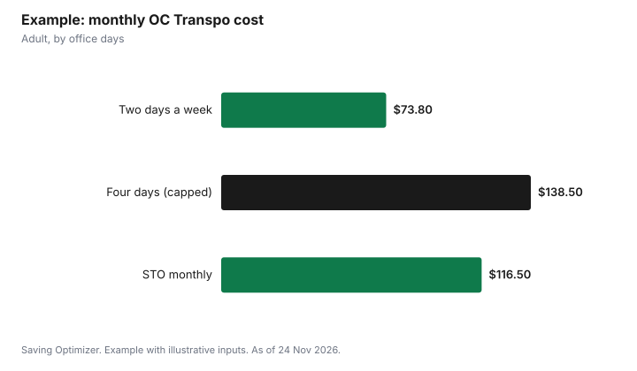

Transportation · Canada
How to Choose OC Transpo Pass Products Without Overpaying in Ottawa–Gatineau

For most OC Transpo riders, the cheapest move is to tap a Presto card and let fare capping work. You pay $4.10 a ride and never more than $138.50 in a month, so a hybrid worker who goes in two days a week pays about $74, not the full pass. If you live in Gatineau, an STO monthly pass for $116.50 also works on OC Transpo buses and the O-Train.
Key takeaways
- OC Transpo adult fare: $4.10 on Presto or O-Payment; monthly $138.50 (checked 24 Nov 2026).
- Fare capping: never more than a DayPass ($12.25) a day or a monthly pass a month.
- Break-even: about 34 rides a month.
- STO monthly ($116.50) is valid on OC Transpo and the O-Train.
- Seniors ride free Wednesdays and Sundays; youth 11 to 18 ride free evenings, weekends and holidays.
OC Transpo fares at a glance
| Fare | Price |
|---|---|
| Adult ride, Presto or O-Payment | $4.10 |
| Adult ride, cash | $4.15 |
| DayPass | $12.25 |
| Adult monthly | $138.50 |
| Senior monthly | $59.75 |
| STO adult monthly (valid on OC Transpo) | $116.50 |
Hybrid office weeks
- Two days a week: about 18 rides, or $73.80 a month.
- Four days a week: about 34 rides, which caps at $138.50.
- Fare capping only counts taps on the same Presto card or payment card, so tap the same way every time.
- On weekends, a DayPass works as a 2-for-1 pass for some riders; check OC Transpo's rules.

Crossing the river
STO's adult monthly pass is accepted on OC Transpo and the O-Train at no extra cost. If you pay per ride with STO's stored value ($4.00), you must first validate on an STO bus to get a two-hour transfer onto OC Transpo. An OC Transpo monthly pass on Presto is also accepted on STO buses, after you first tap on OC Transpo.
See a transit pass break-even calculator and e-bike vs a transit pass.
Sources
- OC Transpo, Prices (fares effective 1 July 2026), checked 24 Nov 2026.
- STO, Tarifs réguliers 2026, checked 24 Nov 2026.
- STO, Voyager avec OC Transpo, checked 24 Nov 2026.
Frequently asked questions
How much is an OC Transpo monthly pass?
An adult monthly pass was $138.50 when checked on 24 Nov 2026.
Does OC Transpo have fare capping?
Yes. With Presto you never pay more than a DayPass in a day or a monthly pass in a month.
Should hybrid workers buy a monthly pass?
Usually not. Tap Presto and let capping decide; two days a week costs about $74 a month.
Can I use an STO pass on OC Transpo?
Yes. STO monthly passes are accepted on OC Transpo buses and the O-Train.
Do seniors ride free on OC Transpo?
Seniors ride free on Wednesdays and Sundays.
Researched and drafted with AI assistance and fact-checked against official Canadian sources. How we create content.
Note: Fares change. Ride counts are examples. Education only.